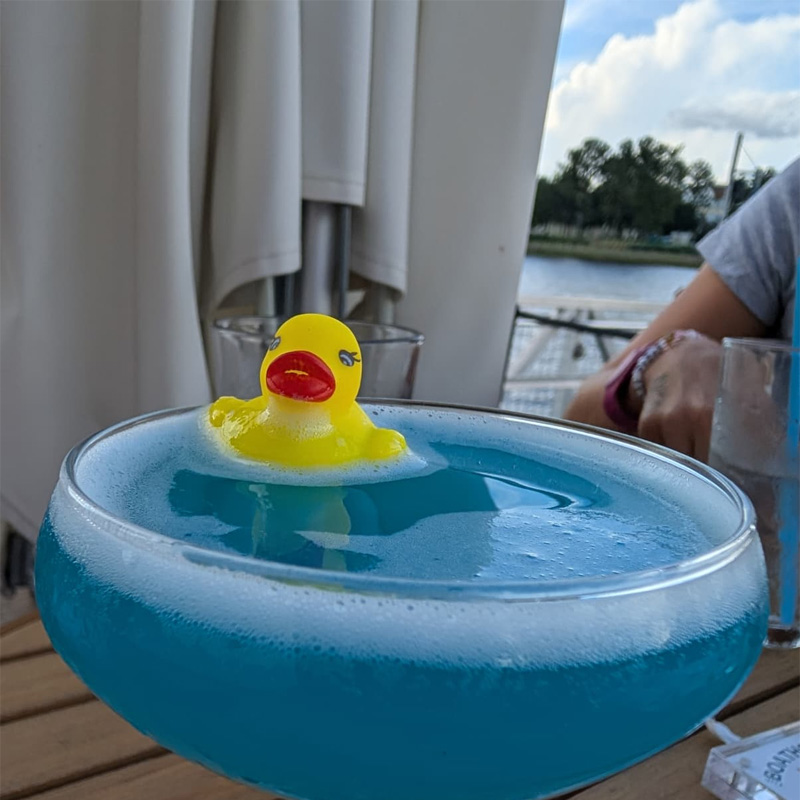
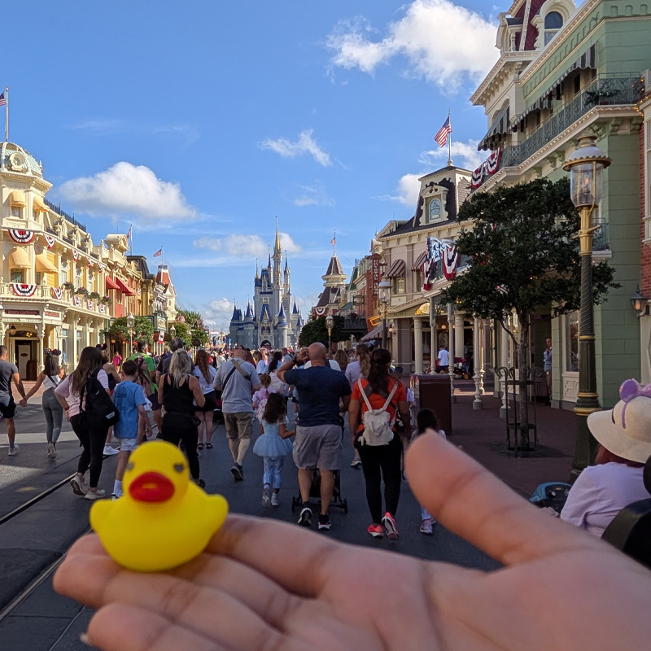
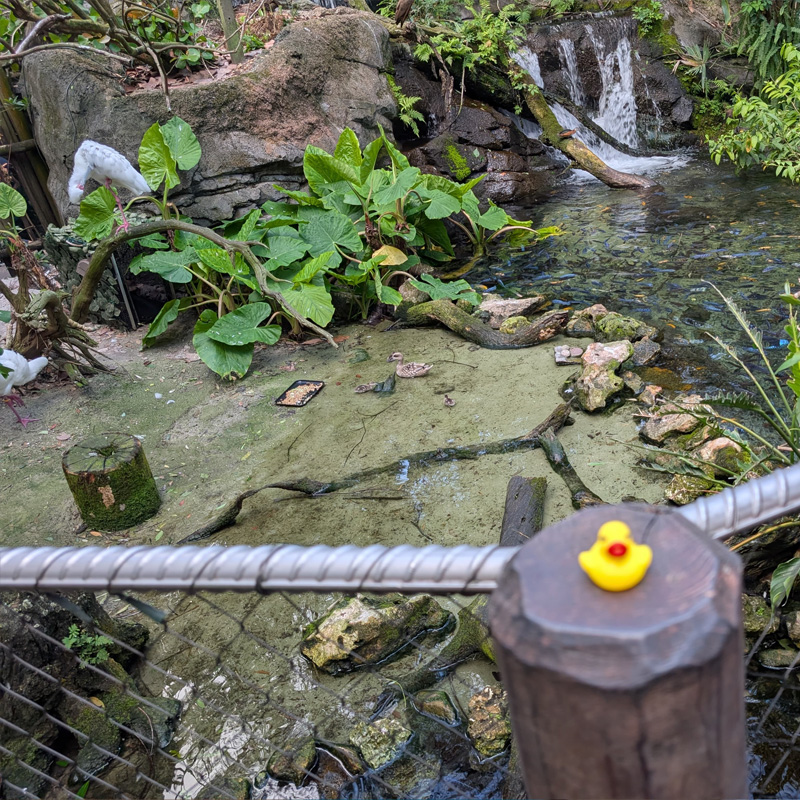
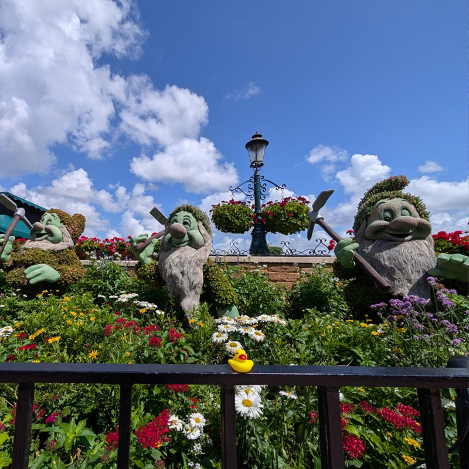
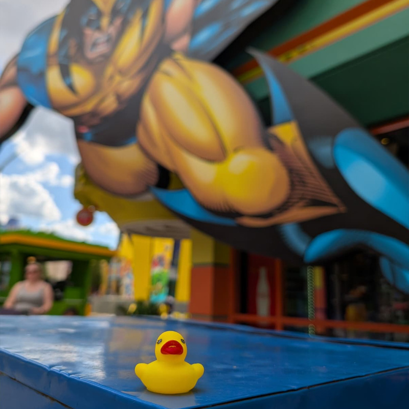
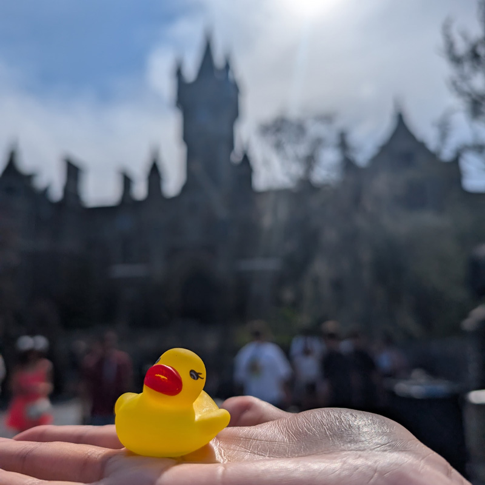
Marc and Freha had driven down from Fayetteville, NC to Gainesville the day prior — the trip to Orlando was the second leg of that drive. They checked in to Port Orleans French Quarter before 3:00 PM, an early check-in pulled off through the Disney app. The room, on the third floor, required a bit of a walk from the parking lot but offered an immersive view over the resort waterway. Rob and Jenna landed at MCO at 2:30 PM on Southwest WN2648 from Las Vegas; Marc picked them up at Level 1 curbside after the "bags in hand" text came through.
The plan had the group taking the POFQ boat to Disney Springs, but it wasn't running that evening, so they took the bus instead. Ticket activation at the Disney Ticket Center went without a hitch. A wander through Disney Springs followed — including a stop at an art gallery where an artist was signing original prints, including a Nightmare Before Christmas canvas that nearly came home for $500. Gideon's Bakehouse had a long walk-up line and no virtual queue in operation; the chocolate chip cookie stays on the list for next time. Dinner at Morimoto Asia was a genuine hit: Freha's tuna sushi and Marc's peking duck with fresh bao buns were the highlights. The dinner grew to a table of six — a couple who drove over from Gainesville joined the group for the evening. Late back to the resort, bags staged for the morning bell services transfer to Boardwalk Inn.
Ducky made his first appearance later that evening — photographed floating in Freha's drink at The Boathouse, where the group sat outside for light snacks and drinks, completely unaware of what the next six days would hold.
- Early app check-in; third-floor room with waterway view at POFQ
- Bus substituted for the boat to Disney Springs — no impact on the evening
- Military Salute ticket activation at Disney Ticket Center: smooth and quick
- Gideon's Bakehouse — no virtual queue; walk-up line too long. Deferred to next visit.
- Morimoto Asia — Freha's tuna sushi, Marc's peking duck. A strong opening night.
- A couple from Gainesville joined the table for dinner — a table of six
- Ducky's debut — photographed in Freha's drink at The Boathouse. The mascot is born.
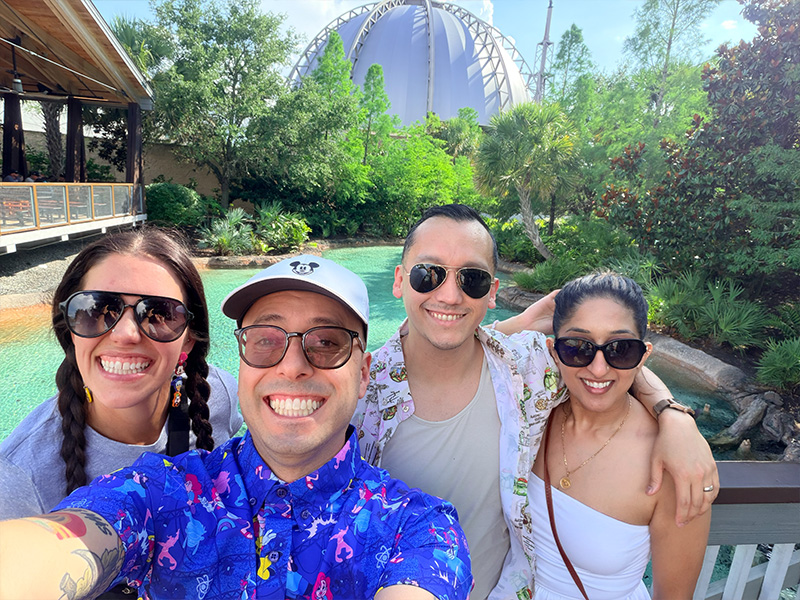
The group caught the bus from Boardwalk Inn to Magic Kingdom and arrived for early entry. The first lesson of the trip came quickly: Frontierland is physically closed during early entry — not just the rides within it. Pre-positioning at a closed land isn't possible. The group pivoted to Tomorrowland, knocked out Buzz Lightyear, and waited for the rest of the park to open before making their way clockwise to Jungle Cruise. The strategy largely held, though Big Thunder Mountain required a later return in the evening rather than the planned morning window.
Haunted Mansion was undergoing a full exterior refurbishment — the building was entirely wrapped in scaffolding with a photo of the facade printed over it. An unusual queue experience, but the ride was running and the group rode it. Seven Dwarfs Mine Train went down during the Lightning Lane window — the group received a Multi Experience pass for any other ride in the meantime — and rode it later in the day when it came back up. TRON was a standout: the ride exceeded expectations for the whole group, and Freha surprised herself by wanting to go again. A nice moment came near Pinocchio's Village Haus — a photo taken at the exact spot where a childhood photograph of Freha was taken in the summer of 1990. The group left before the fireworks and beat the mass exodus cleanly, then ended the night with an unplanned stop at The Cake Bake Shop by Gwendolyn Rogers on the Boardwalk. The chocolate cake was, by all accounts, among the best any of them had ever eaten.
- Early entry lesson — Frontierland physically closed; cannot pre-position in closed lands
- Buzz Lightyear in Tomorrowland first; Jungle Cruise standby after Frontierland opened
- Haunted Mansion — fully wrapped in refurbishment scaffolding; ride was operating
- Seven Dwarfs — went down during LL window, recovered in time
- TRON — Freha wanted to go again
- Big Thunder Mountain — required an evening return rather than the planned morning window
- Freha's photo recreation at Pinocchio's Village Haus — completed
- Left before fireworks; clean exit via bus back to Boardwalk
- Unplanned: The Cake Bake Shop at Boardwalk. Best chocolate cake of the trip.
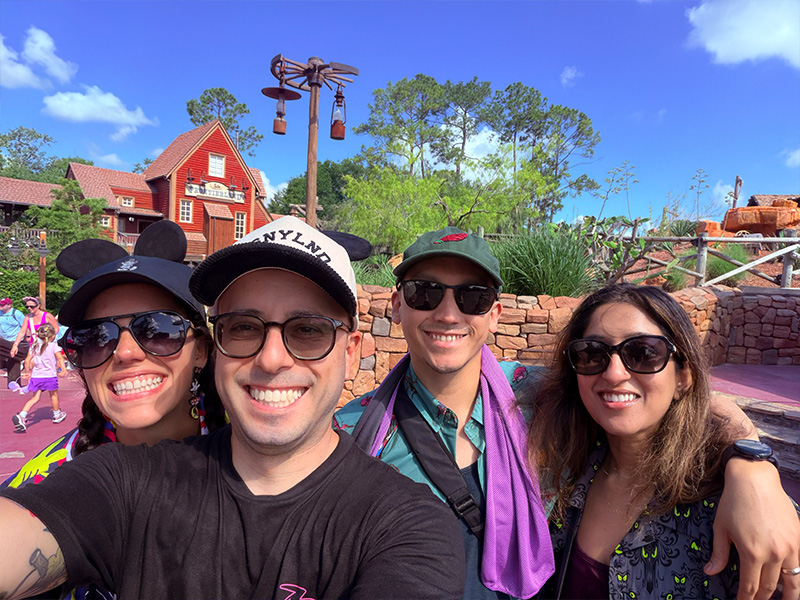
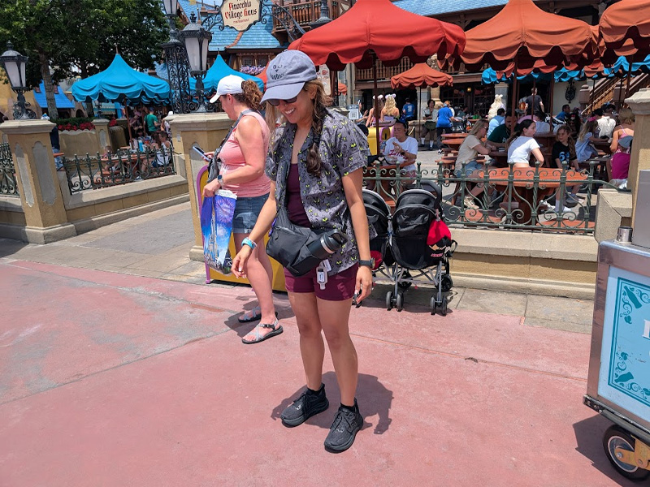
Animal Kingdom delivered from the first minutes. The group arrived during early entry and went directly to Na'vi River Journey, then to the Safari — catching the animals at their most active in the morning light. Giraffes, elephants, lions, and more were moving freely through the landscape. For Marc and Freha it was the best safari they had done across two prior visits; for Rob and Jenna, it was their first time. Expedition Everest followed, then Kali River Rapids — which opened around 10:00 AM and left the group significantly wetter than anticipated on an already hot day. Flight of Passage closed out Pandora before a walk through Gorilla Falls Exploration Trail and lunch at Satu'li Canteen. The group caught the bus to Hollywood Studios.
At Hollywood Studios, Star Tours tapped in immediately upon arrival to start the Multi Pass rolling chain, followed by Smugglers Run and Rise of the Resistance. The Mandalorian and Grogu were spotted doing character photos nearby — an unplanned moment. After Toy Story Mania and Slinky Dog Dash (and an impromptu photo with Edna Mode), the group wandered into Walt Disney Presents — an unplanned stop that became one of the day's highlights. The museum and short documentary were a perfect lead-in to Mickey & Minnie's Runaway Railway. The evening carried through Sci-Fi Dine-In (VIP Fantasmic vouchers collected), a look at the still-closed Rock 'n' Roller Coaster Muppets re-theme from outside, Tower of Terror at 8:20 PM, and Fantasmic. The Skyliner carried the group back to Boardwalk Inn.
- Best safari Marc and Freha have done across two prior visits — animals active at first light. Rob and Jenna's first safari.
- Kali River Rapids — rode at opening (~10 AM); got soaked on a hot day. Worth it.
- Flight of Passage — first time for Freha, Rob, and Jenna
- Mando and Grogu spotted doing character photos — unplanned moment
- Heads Up in queue whenever lines slowed
- Unplanned highlight: Walt Disney Presents — museum and documentary. Perfect setup for Mickey & Minnie's.
- Edna Mode photo — unplanned, memorable
- Marc bought MagicBand+ in all white
- Rock 'n' Roller Coaster Muppets re-theme visible but not open yet
- Tower of Terror at ~8:20 PM; Fantasmic with VIP seating; Skyliner home
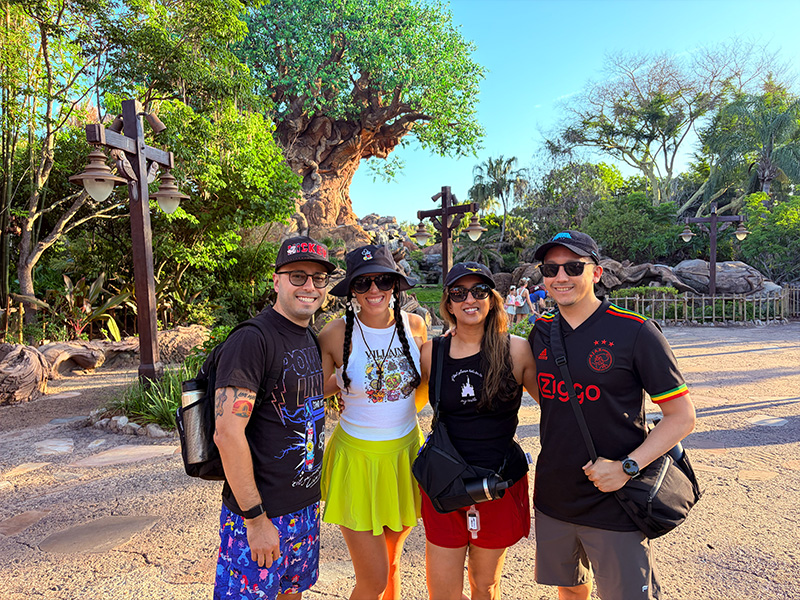
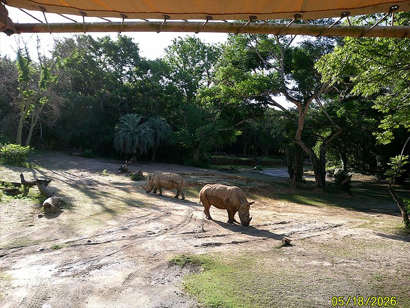
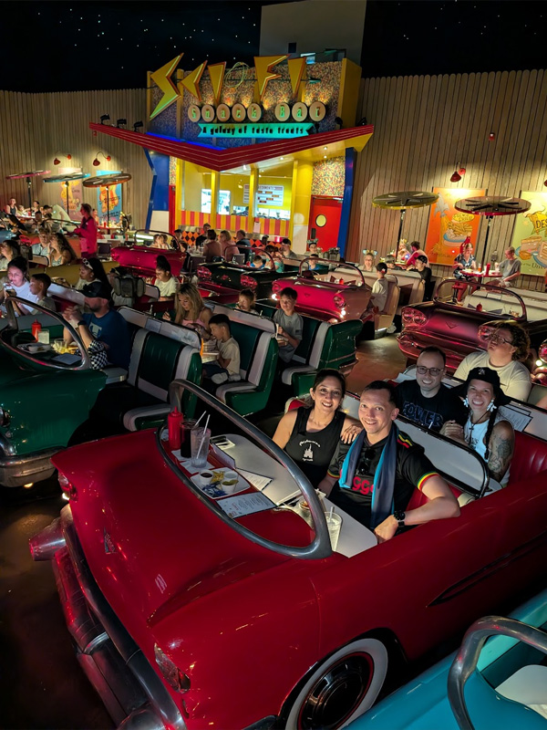
The group entered EPCOT through the International Gateway at early entry and went straight to Remy's Ratatouille Adventure — a notable line even at early entry, but moving faster than expected for that time of day. Croissants and coffee at the France Pavilion Patisserie followed. The World Showcase was walked clockwise. One note for next time: food stalls throughout the Showcase don't open until late morning or early afternoon — planning around that timing will improve the experience on a future visit. The Mexico Pavilion's Gran Fiesta Tour provided a cool, peaceful indoor reprieve from the heat. Frozen Ever After was skipped and passed without a second thought.
Guardians of the Galaxy: Cosmic Rewind landed the Disco Inferno — a first for everyone. Space 220 delivered on its immersive premise: the space elevator sequence and simulated orbit views were genuinely impressive. The food was fine but not a reason to return; the experience alone justifies one visit. Mission: SPACE proved more intense than expected for the group. Living with the Land was the afternoon's quieter counterpoint — a classic EPCOT experience that rewards attention. A preview of Soarin' Across America was attempted and turned away. Test Track 3.0 closed out the main ride block. The group left around 7:25 PM for the fireworks cruise, where Mike was their captain on Crescent Lake. He took them near Hollywood Studios before anchoring for Luminous: The Symphony of Us. Floating debris from the fireworks required protective glasses. Mike ran trivia and shared stories about the resort. The experience was unanimously memorable — the group would do it again and recommend it to others.
- Remy's at rope drop — smooth and quick
- World Showcase note — food stalls open late morning/early afternoon; not at early entry
- Guardians of the Galaxy: Cosmic Rewind — Disco Inferno soundtrack
- Space 220 — great one-time immersion; food decent but not the reason to return
- Mission: SPACE — more intense than the group anticipated
- Soarin' Across America preview — denied entry; opens to the public the following week
- Marc's family photo recreation at Spaceship Earth plaza — completed
- Fireworks cruise with Mike (captain) — standout experience. Protective glasses needed for debris. Highly recommended for up to 10 people.
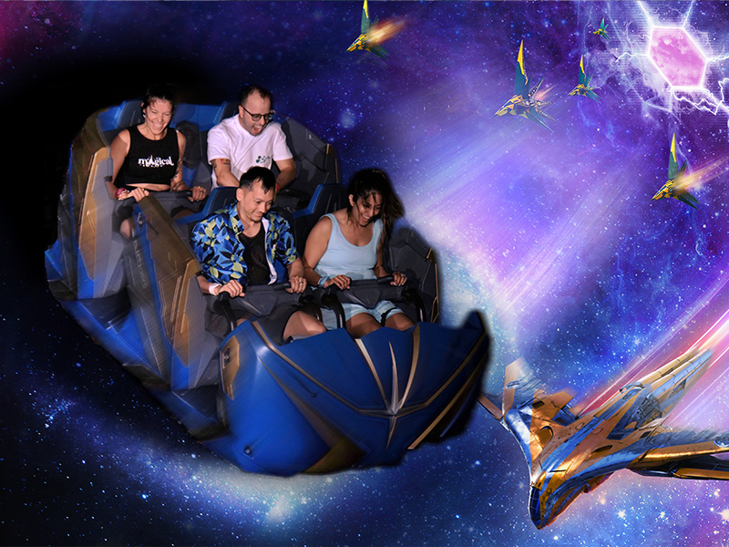
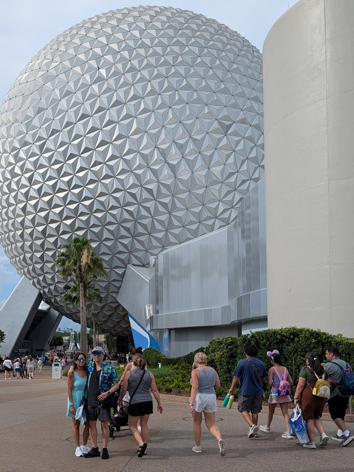
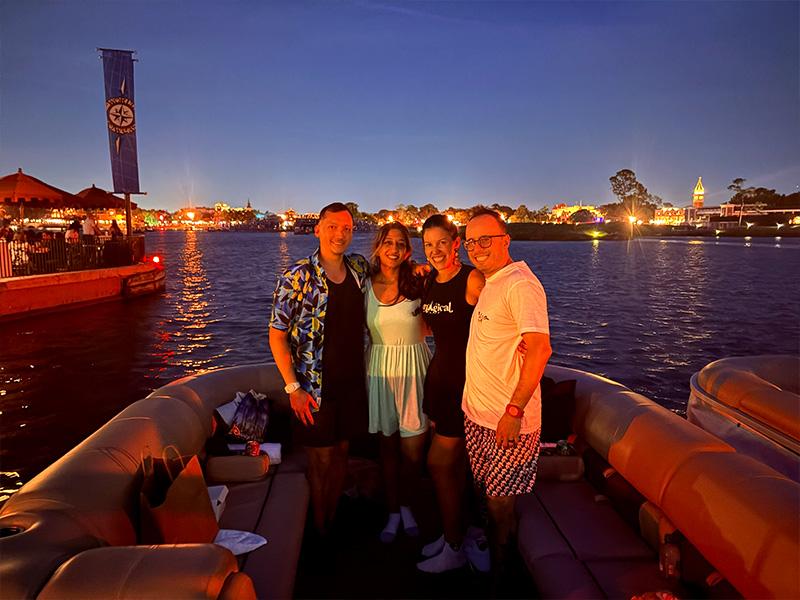
The group activated their Universal Express Passes at the Sapphire Falls lobby and took the boat to City Walk. A lesson surfaced immediately: consolidating all park tickets under one Universal app account does not grant the other guests access on their own devices. The group used paper tickets throughout the day and resolved the issue on Day 5. VelociCoaster was the first ride — a standby line with a short wait at early entry, exactly as intended. Hagrid's Motorbike Adventures followed through the Forbidden Forest queue. Both were strong.
Rob and Jenna attended the wand experience show at Ollivanders and purchased wands, leaving them for engraving before the group continued to Harry Potter and the Forbidden Journey and the adjacent attractions. The Hogwarts Express carried everyone to Universal Studios Florida. A meal in the Harry Potter area was followed by a clockwise loop: Men in Black, E.T. Adventure, The Mummy, and Fast & Furious. The theming in the Fast & Furious queue was genuinely impressive; the ride itself was the group's biggest disappointment of the day. The Hogwarts Express returned the group to Islands of Adventure, where Rob and Marc used their Express Pass for one final VelociCoaster lap while Freha and Jenna waited at the nearby restaurant. Dudley Do-Right's Ripsaw Falls was not running. Spider-Man delivered solid queue theming. Hulk was skipped by choice in favor of the Bourne Stunt Show — a call that turned out to be well worth making. The show was a genuine surprise highlight for the entire group. CowFish at City Walk closed the evening. The day ended later than planned when a door malfunction at Rob and Jenna's room required maintenance and took over an hour to resolve. The group played Heads Up in the hallway while they waited.
- Universal app lesson — don't consolidate all tickets under one account; each person needs their own. Fixed Day 5.
- VelociCoaster — standby, short wait at early entry. Marc and Rob rode again via Express Pass later.
- Rob and Jenna bought wands; both engraved with their names
- Hogwarts Express — both directions; each with a distinct narrative experience
- Fast & Furious — impressive queue; the ride itself was the day's biggest disappointment
- Dudley Do-Right's Ripsaw Falls — not running
- Unplanned highlight: Bourne Stunt Show — highly underrated; excellent for first-timers
- CowFish at City Walk — good food, good end to the day
- Door malfunction at Sapphire Falls — ~1–2 hrs resolved by maintenance; Heads Up in the hallway
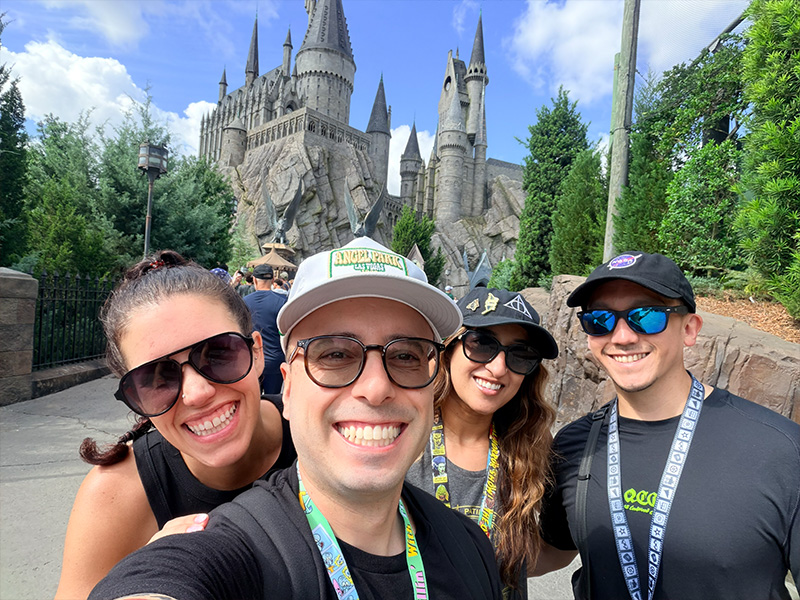
The group took the bus to Epic Universe — arriving the day before the park's first birthday. The security line featured a notably lively guard whose energy set the right tone. Inside, the first order of business was fixing the Universal app issue from Day 4: tickets and passes were unlinked from Marc's account and reassigned to each person's own device. The rest of the day ran without that friction.
The Wizarding World of Harry Potter — Ministry of Magic was the first stop. The detail in the queue for Harry Potter and the Battle at the Ministry was, by collective agreement, the best themed queue any of the group had ever seen. A 30-minute ride delay extended the total wait, but the attraction justified it. Breakfast at Café L'air de la Sirène followed before the group moved to Isle of Berk. Fyre Drill left everyone soaked on a hot day. Hiccup's Wing Gliders was a fun, lighter ride. The Untrainable Dragon show was cancelled; the group received a complimentary Express Pass each in compensation, which Marc and Rob applied directly to Stardust Racers.
Stardust Racers was the ride of the trip. Neither Marc nor Rob anticipated the intensity, and the free Express Pass meant an immediate second run. The coaster now sits alongside VelociCoaster in their top tier. Super Nintendo World followed — hot, exposed, and worth every minute. The group completed all the interactive mini-games, unlocked the Bowser Jr. Shadow Showdown VR experience using Marc's Power-Up Band, rode Mario Kart: Bowser's Challenge and Donkey Kong Mine-Cart Madness. Dark Universe brought Monsters Unchained and Curse of the Werewolf — Freha loved it. The group noted that the area would hit differently at night, and in retrospect, the ~30–40 minutes of darkness before park close was time better spent in the park than at Pizza Moon. A locker face-recognition failure at Stardust Racers (caused by poor lighting in Rob's setup photo) was eventually resolved by a cast member. The group left before the closing rush and returned to Sapphire Falls.
- Universal app fix — tickets unlinked and reassigned to each person's own device
- Security guard at entry — memorable; set the right tone for the day
- Ministry of Magic queue — best themed queue any of the group has experienced
- Battle at the Ministry — 30-min delay; ride was worth the full wait
- Isle of Berk — Fyre Drill: soaked again on a hot day
- Untrainable Dragon show — cancelled; group received a free Express Pass each in compensation
- Stardust Racers — ride of the trip. On par with VelociCoaster. Rode multiple times.
- Super Nintendo World — all mini-games, Mario Kart, Donkey Kong, Bowser Jr. VR via Power-Up Band
- Dark Universe — Monsters Unchained + Curse of the Werewolf; Freha loved it
- Locker face recognition failure — resolved by cast member; take the setup photo in good lighting
- Note for next time: use the final darkness window in the parks, not at a restaurant
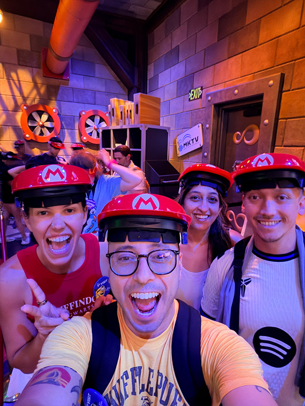
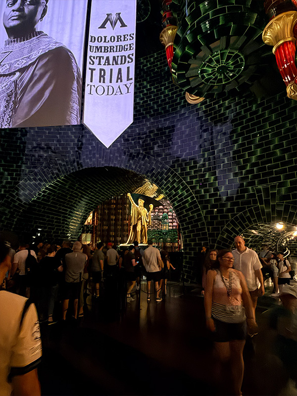
The final morning was entirely unplanned in the best way. Jenna made a reservation at the Crystal Palace for a Winnie the Pooh character dining experience, which locked in Magic Kingdom for the final morning. Bags were left at Sapphire Falls bell services; Rob and Jenna's luggage went into the Tesla. The group drove to Magic Kingdom and took the ferry from the Transportation and Ticket Center to the main entrance.
TRON on standby had a 35-minute wait — fast for what it is. Seven Dwarfs Mine Train followed before the Crystal Palace opened for lunch. The buffet was simple and generous. Piglet, Eeyore, Tigger, and Winnie the Pooh all made appearances; the photo opportunities were unhurried. The Winnie the Pooh dark ride followed, though some members of the group were put off by guests touching surfaces in the queue. The Walt Disney World Railroad from Fantasyland to Main Street offered a fitting close to the week. Some final Main Street shopping, and then the tram back to the parking lot — where a cast member who clearly loved his job made the ride memorable. The group drove to MCO. Rob and Jenna were dropped at the airport. Trip complete.
- Crystal Palace — Jenna made the reservation; character lunch with Piglet, Eeyore, Tigger, and Pooh
- Ferry to Magic Kingdom main entrance — a proper send-off arrival
- TRON standby — 35-minute wait; a good final coaster
- Crystal Palace — simple buffet, unhurried character interactions, great photos
- WDW Railroad from Fantasyland to Main Street — a fitting way to wind down
- Cast member on the parking lot tram — memorable; clearly loves the job
- Rob and Jenna dropped at MCO. Marc and Freha continued to Gainesville.
- Trip complete.
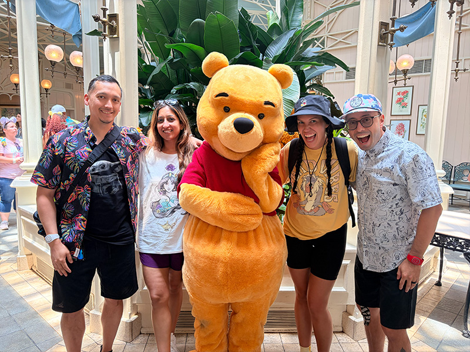
Rolling chain begins the moment you tap Pirates. After Pirates: lock Tiana's immediately. After Tiana's: lock Haunted Mansion for late evening. Wait Magic is optimizing Pirates and BTM timing. Full strategy → May 17 · MK tab.
What to bring: Valid military ID (for the service member — Marc). All guests in the party who will receive discounted tickets should ideally be present, though the service member activates on their behalf.
Where to go: Guest Services at Disney Springs is located near the Town Center area. The activation process takes a few minutes — have everyone's names ready.
After activation: The day is ours. Disney Springs is a free-entry shopping, dining, and entertainment district. World of Disney store, the LEGO Store, The Edison bar, Homecoming restaurant, AMC Disney Springs theater. No park tickets needed — just arrive and explore. Confirm our POFQ check-in and get settled for the week.
Step 2: Drive the Tesla from POFQ to Boardwalk Inn. Park the car there for the duration of the Disney stay — it's walking distance to EPCOT and a direct bus to MK, HS, AK, and EPCOT all run from Boardwalk.
Step 3: Take the Boardwalk Inn bus directly to Magic Kingdom. Boardwalk is an EPCOT-area resort — buses run directly to all four parks including MK main entrance. No transfer needed.
Step 4: End of MK night — Minnie Van or rideshare from inside MK to Boardwalk Inn. Check in. Bags will be waiting.
✓ One Multi Pass per day total: Cannot buy both AK and HS Multi Passes. Chose HS — correct call given Thrill-Data sell-out times.
✓ Single Pass does not trigger rolling chain: Only Multi Pass redemptions start the rolling chain. FoP at AK triggers nothing. Rolling chain begins at HS at Star Tours tap on arrival (~12:10 PM) — Slinky at 3:10 PM continues the chain.
✓ Grace period: officially ±15 minutes per Disney cast member. Arrive within your window.
Cell phone lot is free and stress-free. No need to leave POFQ on a schedule — pull to curbside only after the "bags in hand" text arrives. They could land early, bags could come fast. Stay flexible.
If the group prefers something lighter or the evening calls for it, Morimoto Asia Street Food (outdoor quick service right outside the main restaurant) serves many of the same dishes at lower prices with no wait. Either way, the reservation is confirmed and can be modified or cancelled via OpenTable if needed.
2. Drive the Tesla from POFQ to Boardwalk Inn — Marc drives over (~15 min) and parks for the entire Disney stay. Boardwalk buses run directly to all four parks.
3. Boardwalk bus to Magic Kingdom — target departure from Boardwalk ~7:15–7:30 AM → arrive MK tapstiles by 8:00 AM for the 8:30 Early Entry.
Pack your MK day bag tonight. Sunscreen, ponchos, portable chargers, snacks, water. This stays with you — not with Bell Services.
A bag-free lane at most parks moves much faster — phone and MagicBand only. Worth using if the main bag line is long and you can stow everything in your pockets briefly.
Free short-term lockers at each ride entrance are timed to your wait + ride duration. With Express Pass, your shorter queue time works in your favor.
Practical: sling bags work great between rides. For back-to-back coasters, develop a system — bag in free locker at first ride, collect, move to next.
Pop-up thunderstorms typically roll in between 2–5 PM and clear within 30–60 minutes. Outdoor coasters pause for nearby lightning; indoor rides stay operational. LL and Express credits are protected when rides go down.

Real Disney days never follow a script. Use this as a reference and adapt freely. Jungle Cruise at Early Entry is standby — no LL used. The Pirates LL tap (~9 AM) is the first fixed anchor and starts the rolling chain. Everything before that is flexible.
After Pirates: lock Tiana's immediately. After Tiana's: lock Haunted Mansion for late evening. Wait Magic is optimizing Pirates and BTM time windows. Monitor both Thrill-Data and MDE.


The Safari timing is the one true non-negotiable — animal activity is best before 9:30 AM and that window closes regardless. Everything else adapts around it and around the confirmed HS LL windows.
Tap Star Tours the moment you walk through the gates — this starts the rolling chain and unlocks Mickey & Minnie's. The 4:25 PM dinner is the fixed anchor: Slinky tap at 3:10 PM sharp means off the ride by ~3:30–3:35 PM with 50 min to reach Sci-Fi.

Space 220 at 3 PM and the 7:15 PM International Gateway departure are firm. Everything else adapts around them. The Mission: SPACE / Living with the Land window overlap (2:10 PM / 1:25 PM) is handled by the ±15 min grace — tap Mission: SPACE at 1:25 PM, exit by 1:50 PM, tap Living with the Land at 2:10 PM. Both are in the same area of World Discovery/World Nature.

The Seas with Nemo & Friends (short standby, relaxing family ride). UK Pavilion Rose & Crown for a pint. Final Japan and France shopping. Any additional rolling picks as they become available.
What Disney provides: Coke, Diet Coke, Sprite, water, pre-packaged chips/cookies/treats. Fireworks soundtrack plays on the boat. Captain provides Disney trivia.
What to bring: BYOB allowed — no glass. Bring wine/champagne in cans or plastic cups from the Boardwalk bar. Light jacket or wrap (can be cool on the water at night). Low-light mode camera/phone ready.
Onboard fun: Heads Up! app (133 decks — pick a few favorites in advance). Custom Disney trivia game. The captain may also run ship trivia. Tip appreciated for the captain.
No restroom on the boat — use facilities at Boardwalk before heading to the dock. Total experience ~1 hour 45 min.
Recommended: Request a rideshare XL (minivan or SUV) for the Boardwalk Inn → Loews Sapphire Falls leg (~25–30 min, ~$25–40 via Uber XL). Marc drives the Tesla separately. Everyone and all luggage travel comfortably without reshuffling.

Which Universal day is IOA+USF vs Epic Universe will be decided closer to the trip based on weather, crowd predictions, and group energy. Both options are ready to execute on either assigned day. We have Express Pass for all parks.
- ⭐VelociCoaster — Rope drop at 8 AM with EPA. Ride multiple times while waits are 5–15 min before 9 AM crowds. 155 ft, 70 mph top-hat launch coaster — one of the best in the world. This is the reason IOA goes first with fresh legs.
- ⭐Hagrid's Motorbike Adventures — Right after VelociCoaster laps, or use Express Pass. Lines build extremely fast. One of the most immersive ride experiences ever built.
- ⭐Harry Potter and the Forbidden Journey — Castle walkthrough + dark ride. After VelociCoaster while lines are manageable.
- ●Jurassic World Ride — Water-based, you will get wet. Group decision.
- ●The Amazing Adventures of Spider-Man — Classic IOA dark ride.
- ⭐Hogwarts Express — Different experience each direction. Hogsmeade → Diagon Alley and back. Requires Park-to-Park ticket.
- ⭐Hollywood Rip Ride Rockit — Launched coaster, pick your own hidden song.
- ●Race Through New York Starring Jimmy Fallon — Air-conditioned, fun group ride.
- ●Revenge of the Mummy — Classic launched indoor coaster, surprisingly intense.
Epic Universe is located ~15 minutes south of Universal's north campus (IOA + USF). Resort transportation runs from Sapphire Falls to Epic Universe — no driving needed. Park-hopping between Epic Universe and the north campus is not possible. Each campus is its own dedicated day.
- ⭐Harry Potter and the Battle at the Ministry — Flagship dark ride. Most technically ambitious attraction in the park. Top priority at rope drop.
- ⭐Ministry of Magic theming — The detail level rivals Diagon Alley. Explore it slowly — you won't regret it.
- ⭐Dragon Racers — Dual-track launch coaster, one of the best new coasters on property.
- ●Isle of Berk atmospheric experiences — Dragon encounters and walkthrough theming.
- ⭐Mario Kart: Bowser's Challenge — AR headset kart racing through iconic tracks.
- ⭐Donkey Kong Mine-Cart Madness — High-speed outdoor coaster.
- ●Power-Up Band interactive quests — Collect coins and beat bosses throughout the land.
- ⭐Monsters Unchained: The Frankenstein Experiment — Indoor dark coaster, highly themed.
- ●Celestial Park hub — Water features and open space. The most beautiful entrance plaza Universal has ever built.
This guide uses shorthand throughout to keep things concise on mobile. Here's every acronym decoded in one place.